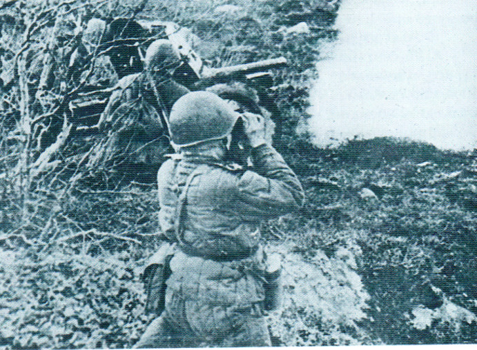

Наступление 10-й армии Ф. И. Голикова началось в ночь на 7 декабря с совместной атаки воинских частей 328-й стрелковой дивизии (полковник П. А. Ерёмин) и 330-й стрелковой дивизии в направлении Михайлова, который был после ночного боя к утру освобождён. Этот успех стал сигналом к началу контрнаступления 50-й армии И. В. Болдина.
Согласно журналу боевых действий город освободила 328-я стрелковая дивизия. Однако случилось так, что посланный в штаб дивизии верховой связист с донесением о взятии города не нашел штаба дивизии, и донесение вернулось. В это время 330-я дивизия по радио сообщила в штаб армии о взятии города, якобы только ее подразделениями. Это в дальнейшем сказалось на точности освещения событий за город Михайлов[2][3]
В течение 8—10 декабря силы 10-й армии продвинулись с боями более 70 километров и стали подходить к Дону. 50-я армия к концу 10-го числа продвинулась на юг на глубину 4-16 км. 50-я армия была ослаблена предыдущими оборонительными боями, к тому же плотно сбитые порядки ударной группировки 24-го немецкого моторизованного корпуса оказывали ожесточённое сопротивление. Поэтому части армии не смогли своевременно овладеть обозначенными им районами и перерезать пути отхода подразделениям 2-й танковой армии Гудериана, которые отступали из района Венёв — Михайлов.
9 декабря 1-й гвардейский кавалерийский корпус П. А. Белова совместно с 9-й танковой бригадой освободил Венёв, и к 10 декабря его передовые части были на подступах к Сталиногорску (ныне Новомосковск). Несмотря на относительно высокий темп наступления сил 10-й армии (10—12 километров в сутки), он был явно недостаточным для окружения группировки вермахта, отступающей из района Венёва и Тулы. Объяснялось это несколькими факторами, к примеру, недостаточным вниманием к обходу и охвату немецких опорных пунктов. Так, 328-я стрелковая дивизия в течение 9 декабря пыталась отбить у немцев село Гремячее (24 км юго-западнее Михайлова). И только вечером советские силы обошли вражеский опорный пункт с севера и юга, после чего сопротивление немцев было сломлено. На этот недостаток командование фронта неоднократно указывало командарму Ф. И. Голикову. 10-11 декабря части 10-й армии завязли в боях за Епифань и Сталиногорск, где немцы оказывали ожесточённое сопротивления.
В то же время надо отметить и такой объективный фактор, как недостаток у 10-й армии подвижных частей. У армии не было мощных кавалерийских, танковых и моторизованных сил для успешного проведения операции на окружение. 10-я армия имела 57-ю и 75-ю кавалерийские дивизии, но они были малочисленны и их использовали в основном в качестве флангового прикрытия на стыке с соседом слева. А части 1-го гвардейского корпуса пошли в наступление со своих оборонительных порядков. Возможности перебросить соединения кавалерийского корпуса для формирования подвижной группы в составе 10-й армии не было. Кавалерийскому корпусу пришлось преодолевать упорное сопротивление отходящей от Венёва ударной группировки армии Гудериана. Поэтому части П. А. Белова прошли за время операции 100—120 км (то есть средний темп всего 8—10 км в сутки, что для кавалеристов очень мало). Конечно, идеальным решением было бы сменить кавалерийский корпус Белова на стрелковые дивизии, а части корпуса ввести в прорыв 10-й армии на линии Михайлов—Сталиногорск.
К 14 декабря в контрнаступление включились и силы левого крыла 49-й армии генерал-лейтенанта И. Г. Захаркина. 49-я армия перед наступлением получила четыре свежие стрелковые бригады (19-ю, 26-ю, 30-ю и 34-ю). Кроме новых соединений, в армию Захаркина передали и 133-ю стрелковую дивизию из состава 1-й ударной армии. За 3 дня сражения части 49-й армии прошли 10—20 км, освободив город Алексин и смогли захватить плацдармы на левом берегу реки Ока, севернее Тарусы и у Алексина.
50-я армия Болдина шла медленнее всех, так как немецкое командование делало всё, чтобы удержать за собой район Щёкино и этим самым не допустить советские войска к шоссе Тула — Орёл и спасти свои войска от возможного окружения. Только 17 декабря части 50-й армии сумели отбить Щёкино. Но немцы к этому времени уже смогли отвести свои соединения из района северо-восточнее Щёкина, Узловой, Ломовки на юго-запад. За десять дней операции 50-я армия продвинулась на 25—30 километров, таким образом, темп её наступления составлял не более 2,5—3 километров в сутки.